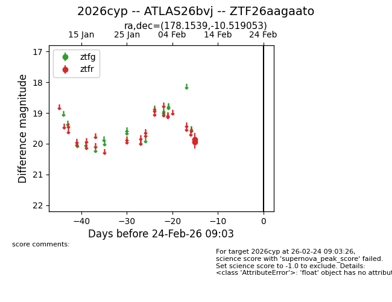
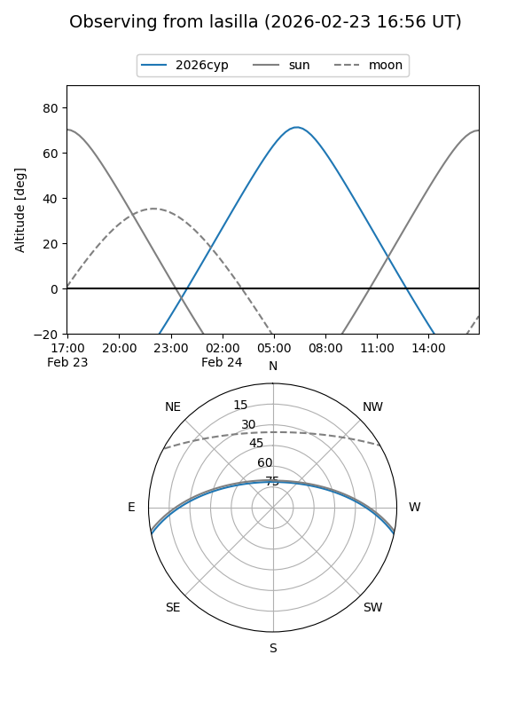
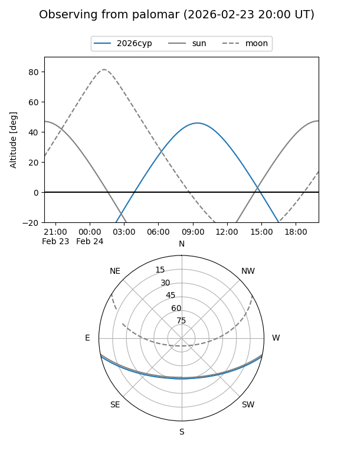

2026cyp
Target 2026cyp at 2026-02-24 09:08
Aliases and brokers:
FINK: link
Lasair: link
ALeRCE: link
TNS: link
YSE: link
alt names
ZTF26aagaato (ztf,fink_ztf)
2026cyp (tns,yse)
ATLAS26bvj (atlas)
Coordinates:
equatorial (ra, dec) = 178.1539,-10.51905
equatorial (HMS+DMS) = 11:52:36.93,-10:31:08.59
galactic (l, b) = (280.2134,+49.74022)
Flags:
Photometry:
last ztfr=19.86
2 ztfr detections
Lightcurve

Visibility


Additional plots